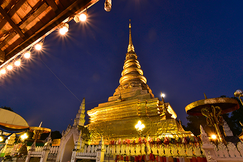
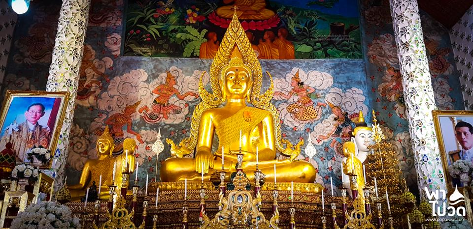

แพร่ เป็นเมืองล้านนาเก่าแก่ที่เต็มไปด้วยเรื่องราวแห่งประวัติศาสตร์ที่น่าสนใจมากค่ะ รวมถึงมีสถานที่ท่องเที่ยวมากมายรอให้เราได้ไปเยือน
วันนี้เราก็มีพิกัดดีๆ มาฝากกัน กับ 10 ที่เที่ยว แพร่ เสน่ห์แห่งล้านนา ไปเช็คอินแล้วต้องหลงรักแน่ๆ ด้วยความสวยงามของสถานที่ท่องเที่ยวทั้งทางวัฒนธรรม และธรรมชาติ ที่คุณจะตกหลุมรักแพร่ โดยไม่รู้ตัว ❤
|  | |
|  |
|
สำหรับที่แรกที่จะพาไป ก็ต้องมาเอาฤกษ์เอาชัยกันสักหน่อยครับ วัดพระธาตุช่อแฮ อยู่ในอำเภอเมืองแพร่ ศิลปกรรมแบบเชียงแสน สูงถึง 33 เมตร สร้างด้วยอิฐโบกปูน หุ้มด้วยแผ่นทองเหลืองลงรักปิดทองสวยงามมากจริงๆครับ ภายในจะบรรจุพระเกศาธาตุ และพระบรมข้อศอกข้างซ้าย เชื่อกันว่าหากได้มาสักการะพระธาตุช่อแฮจะเป็นการเสริมสร้างความเจริญรุ่งเรืองในชีวิต ใครไปเที่ยวจ.แพร่ ห้ามพลาดที่จะไปสักการะเลยครับ |
พิกัด : https://goo.gl/maps/Koxdue3yYHRNMWHt7
|